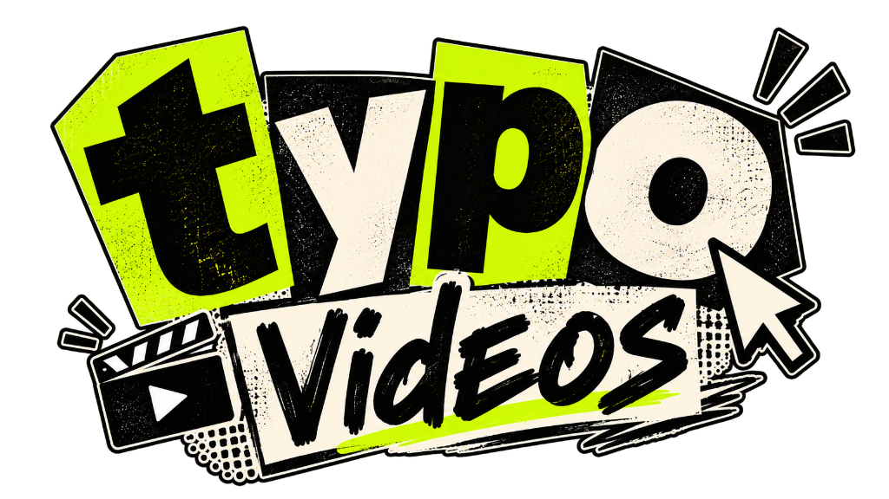

Transform raw speech into scroll-stopping 1080x1920 60FPS typography reels in seconds. Autonomous silence cuts, millisecond Whisper sync, dynamic sound design, and 100% metadata wipe — rendered completely offline on your PC.
git clone https://github.com/witrfaruk/Typography.git

Clean, direct commands ready to paste into PowerShell, Terminal, or Command Prompt.
git clone https://github.com/witrfaruk/Typography.git
cd Typography
.\Generate_Video.batpython -m venv .venv
.venv\Scripts\activate
pip install -r code/requirements.txt
python code/verify_env.pypython code/run_pipeline.py
python code/run_pipeline.py --audio "Audio/speech.wav"
python code/run_pipeline.py --dark --speed 1.35
python code/run_pipeline.py --watchpython code/remove_metadata.py
python code/remove_metadata.py "Final Video/my_video.mp4"Download tools individually below, or copy the single combined command to install everything sequentially.
winget install -e --id Python.Python.3.11 ; winget install -e --id Gyan.FFmpeg ; winget install -e --id Git.Git ; winget install -e --id Ollama.Ollama ; pip install -r code/requirements.txt
Core execution environment. Powers faster-whisper transcription, PyTorch audio tensor manipulation, and NVENC streaming.
winget install Python.Python.3.11
High-speed video rendering pipe, audio normalization filter, multi-track BGM ducking, and bitexact metadata stripper.
winget install Gyan.FFmpeg
Runs offline models like qwen3.5:9b or llama3.1 for semantic scene emphasis and keyword beat styling.
ollama run qwen3.5:9b
Faster-Whisper (OpenAI Whisper with CTranslate2), PyTorch, OpenCV, Pillow, PyYAML, and Pydantic V2.
pip install -r code/requirements.txt
Version control tool for cloning the repository, updating models, and pulling future updates and fonts.
winget install Git.Git
Enables CUDA cores and hardware NVENC for rendering complete videos in under 25 seconds. CPU fallback is auto-enabled if no GPU is present.
CPU Fallback: Auto Enabled
Clear hardware comparison to run the engine at maximum speed.
| Component | Minimum Requirement | Recommended (Fastest) |
|---|---|---|
|
💻Operating System
|
Windows 10 / Linux / macOS | Windows 11 (64-bit) |
|
⚙️Processor (CPU)
|
4-Core Intel Core i5 / AMD Ryzen 5 | 6-Core+ Intel i7 / Ryzen 7 |
|
🎮Graphics (GPU / VRAM)
|
Integrated GPU (CPU Fallback Enabled) | NVIDIA RTX Series (4GB+ VRAM, NVENC) |
|
🧠Memory (RAM)
|
8 GB System RAM | 16 GB+ DDR4 / DDR5 |
|
💽Disk Storage
|
2 GB Free Space | Fast NVMe SSD |
|
🤖Local AI (Optional)
|
Automatic Heuristic Rules (0 RAM used) | Ollama (qwen3.5:9b or llama3.1) |
How you will generate viral typography videos every single day.
Drop raw recorded voice audio (.wav, .mp3) into your Audio/ folder.
Audio/speech.wav
Double-click Generate_Video.bat. The autonomous pipeline handles transcription, trimming, and NVENC rendering.
1-Click Run
Your 60FPS video lands in Final Video/. All metadata is stripped, and source audio is auto-deleted to eliminate clutter!
Final Video/output_60fps.mp4
Direct, factual answers for creators, developers, and search engines.
typo Videos is an autonomous, open-source kinetic typography reel engine. It converts speech audio into viral 1080x1920 60FPS vertical reels with millisecond Whisper subtitle synchronization, dead-air silence removal, ambient background music ducking, and 100% automated metadata wiping.
Simply place any voice audio file into your Audio/ folder and double-click Generate_Video.bat. The engine runs faster-whisper to extract exact timestamps, trims silent pauses, animates kinetic words, mixes background music, strips container metadata, and outputs a ready-to-publish 60FPS MP4 file into Final Video/.
No. typo Videos is 100% local-first and works completely offline. Your voice recordings, transcripts, videos, and fonts are processed locally on your machine. No telemetry, audio data, or prompt logs are ever transmitted to cloud servers.
The minimum configuration is Windows 10/11, 8 GB RAM, Python 3.10+, and FFmpeg. While an NVIDIA GPU with NVENC hardware acceleration delivers full 60FPS renders in under 25 seconds, the engine includes automatic CPU fallback for systems without dedicated GPUs.
Yes. typo Videos is 100% free and open-source under the permissive MIT License for both personal creators and commercial production pipelines.
The pipeline executes an automated FFmpeg bitexact sanitizer pass that strips camera EXIF markers, GPS coordinates, author handles, creation timestamps, and software signatures from the final video file before output.
typo Videos is 100% free and open-source. If this engine saves you hours of video editing, consider supporting ongoing development, new fonts, and kinetic motion presets!